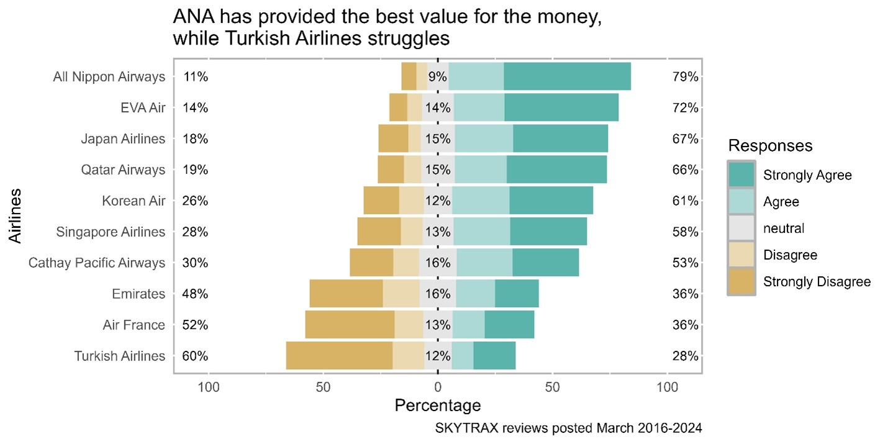
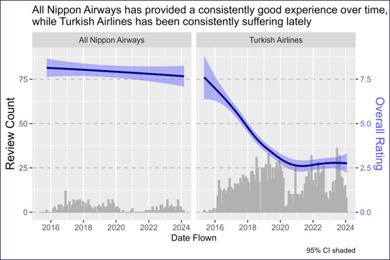
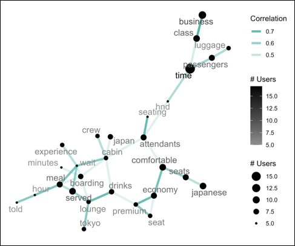
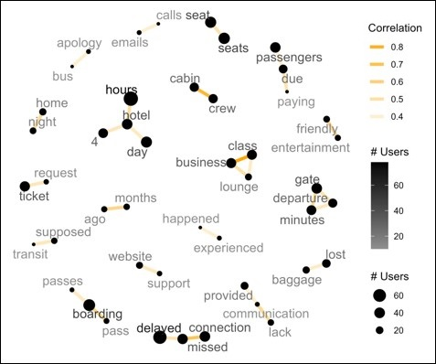
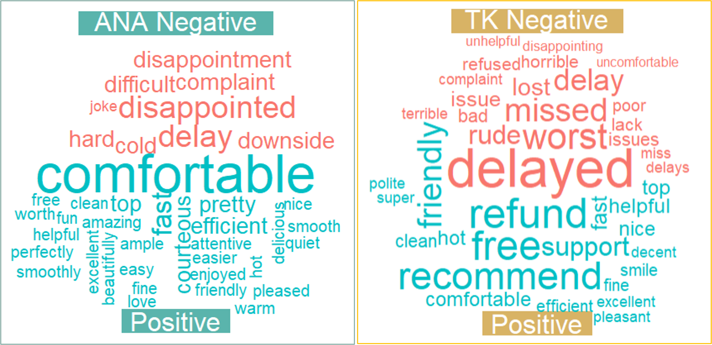

April, 2024
Survey Results: What Eurasian Airline Passengers Care About
An independent project toward the end of graduate school, the primary objective was to introduce
natural language processing (NLP) techniques via sentiment and textual analyses,
and how to visualize them. Peer reviews prompted improvements to visuals.
Introduction
Airlines run incredibly large businesses, each typically transporting several millions of
passengers annually. While the number of reviews by flyers is not remotely close to these levels,
digesting and translating voluminous feedback into status and corrective actions is critical for
continued business and growth.
R was used to process numerical and textual feedback to identify the strengths and weaknesses
of the best and worst airlines in a sample of flight reviews for a few Eurasian-based airlines. Text
analysis was lexicon-based, including unigram frequency and polarity-based sentiment analysis.
These techniques identified what was associated with a passenger's recommendation more specifically
than numerical rating buckets could.
About the Data
A sample of Skytrax data from
Gigasheet
details 8,100 flight reviews posted between March 22, 2016 and March 6, 2024.
The reviews are spread across ten different airlines that are European or Asian-based.
The feedback form can be seen
here.
Findings, in a nutshell
The survey's numerical scales are currently suffering from some misinterpretation. For example,
some passengers rated an airline experience 10/10, yet would not recommend the airline to others:
Move the <|> slider to see how feedback influenced the final visual.
The original grayscale was too distracting; try to emphasize only the "culprit" portions.
A minor update to the survey that clarifies how the numerical scales map to "good" or "bad"
performance would alleviate about half of the extremist malignments pertaining to the
Overall Rating. Without NLP techniques, this wouldn't be discovered - let alone quantifiable.
Most other malignments were difficult to explain because a passenger's written feedback
included roughly equivalent records of positive and negative experiences. Indeed, there were
rare instances of overwhelmingly positive commentary paired with "not recommended" conclusions.
Thus:
- Different passengers have different weights - or values - of specific services.
- Written reviews don't always allow for an accurate assessment of that weighting.
- We can't expect perfect translations between commentary and numerical scales.
Nevertheless, we can extract considerable meaning from common feedback and compare it to the scales.
An impressively strong Pearson's correlation coefficient of 0.88 between "value for the money" and
"overall rating" highlights our need to identify passenger "values."
All Nippon Airways emerges as the competition to beat, and Turkish Airlines
as the operator to avoid:

Reviews are time-sensitive. We look for up-to-date and consistent feedback for the
clearest takeaways:

Unfortunately for Turkish Airlines, their problems started well before COVID-19. They haven't
recovered from the pandemic, either. We must be careful about pulling too much feedback
from peak pandemic days, because such an irregular event likely caused woes that no longer exist.
To stay current and consistent, we assess reviews about flights conducted March 2023-2024.
So, what is "value" in "a good value for the money"? What are these passengers talking about most?
ANA reviews
emphasize good timing, comfort, sustenance, and attentive cabin crew - largely explaining
their first-place ranking among sampled airlines

Turkish Airline reviews
emphasize poor timeliness, communication, baggage traceability, and missed connection issues -
largely explaining their last-place ranking among sampled airlines

These insights generally par with unigram, polarity-based sentiment analysis results:

An important limitation of unigram word clouds is their potential for poor accuracy.
For example, "recommend" has a positive connotation on its own, but any context like "not recommend"
(a bigram) isn't captured. A thorough, manual review prompted by the network diagrams and word
cloud results contributed to the confident narrative here, even if the positive elements of TK (Turkish
Airlines) require some tweaking.
In conclusion, time really is money. Passengers appreciate and recommend airlines
that respect their time with polite efficiency. If that can’t happen, they expect an empathetic
and helpful solution from the airline staff. Comfortable seats and great food are valued perks.
Textual and sentiment analyses are essential tools to gather deeper insights from
mass quantities of reviews. They enhance the accuracy of purely numerical rating scales.
Even with a standard lexicon, such analyses are effective in deriving key drivers of customer
satisfaction.